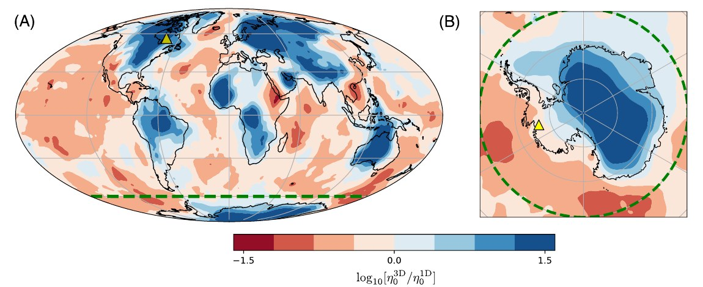

The Overprint of Transient Rheology on Laterally Heterogeneous Viscosity: Influences on Sea-Level Change Driven by Antarctic Ice Sheet Loss
Lau, H. C. P., Coonin, A. N., Richards, F. D., & Latychev, K. (2026). Journal of Geophysical Research: Solid Earth, 131, e2026JB033961. doi:10.1029/2026JB033961
In brief
When ice sheets melt, the land beneath them rebounds. For the West Antarctic Ice Sheet, much of which sits on bedrock below sea level, this uplift can help stabilise the ice by reducing how much of it is exposed to warm ocean water. How fast the land rises depends on the properties of the mantle below, which beneath West Antarctica is unusually hot and runny.
This study is the first to simulate two key effects together: 3D variations in mantle viscosity and “transient” rheology, the tendency of rock to deform more readily when the load on it changes quickly. Simulations run from the Last Interglacial (~122,000 years ago) through to 2100 and 2300 under several projected scenarios of Antarctic ice loss.

Key findings
- Beneath West Antarctica, including transient rheology roughly doubles predicted uplift rates compared with models that consider 3D viscosity variations alone.
- Transient behaviour can have a larger effect than 3D viscosity structure itself on the solid Earth response to modern and future ice loss.
- The effect depends on the mantle’s temperature: in hot regions like West Antarctica it amplifies the departure from simpler models, while beneath the cold, stiff mantle of northern North America (former Laurentide ice sheet) it has the opposite tendency.
- To capture the full impact on ice-sheet stability, fully coupled models of ice sheets and solid Earth deformation are needed, a central goal of Earth2Sea.